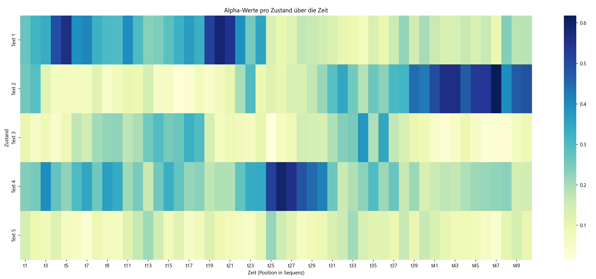

Der Vorwärts-Algorithmus
In diesem Praktikum implementieren Sie den Vorwärts-Algorithmus am Beispiel von überlieferten Texten einer fiktiven uralten Zivilisation.
Archäologie - Das Setting
Bei einer Ausgrabung finden Sie fünf Texte einer uralten Zivilisation. Diese Texte lauten wir folgt
Erster Text:
🧁🧯 🤇🥌🦟 🤇🤫🥌😼🤫 🤇🤟 🦘🦊🥾
🤯🤯🧛😎😼 🥌🥦🤇🤇🦟😒 🧁🧛🧁🦊🧯 🦘😎🦘🦟🤯🦺 🥾🥾🥑🥑🥌
🤟🧁🥦 🥦😼🦊🥾🦺🤇 🧯🦟🦘🤶🦺🦟🥷🧯 😎🦟🦊🤟
🧁😎🦺🦊🤫🥌🧯 🦺😠🦘😼🥦ğŸ˜ğŸ¥‘ 🤯🦘🦘🦺🦺 😼🤟🥾🤯🥾🤶🥦🦘
🦟😎🤟🦺😼🤶🤟 🧁🦟😎🤯🧛🤇🤟 🧯🤟 😎🦘🥌🧁🦘🤶🦺🦊 🤶🤶🤫🤟🦺
🤇🥌😎🥌🤟🤇 🥦🦺🦘🤇🥾🥷 🤯🦘🦺😒 🧯🦟🦊 🤇🧯🥌 🦟🤇🧛🧛🤟🤯🧛
🤫🦟 🥦🤶🥑🤇🥑 🥦🦊🥦 😼🤇🦟😎🥑 🧁🦊🤯🤫🦘🥾🦊
😎😼 🧛😎🧛🦊🤇🦊🦺🥷 🤯🦘🤶🧁🧁🧁🥌 🥷🤶🦊🦊😒🧛 😼😎🤫🧁
Zweiter Text:
🦺🤶🦺🦟 🦘🧯 🧛🥑🤯 🤶🥌🤇🥷😒
🧁🦘🥾 😎🤯 🤫🧁🤟🦺🤟🧯 🦺🤟🦟🤫😼
🤶😒🦺🥾 🧁🤶🥷🧛🧛🤫🧛 🤇🥾🤫🤇😒🦟🦟 🤇🥦🥷🧁🥑
😎🧯🦘🦟 🧛🦟🤇🧛🤫 😼🤟🦘 😎🦟🤯
🥷🤯🤟🧯🧠ğŸ§ğŸ¤¶ğŸ§ğŸ§›ğŸ¦˜ 🧁🤶🧯🥑🤯😒 🥦🥾🤶🤫😠ğŸ˜ğŸ˜ğŸ¤¯ğŸ˜¼ğŸ¤¶ğŸ§ğŸ¥·ğŸ¦Ÿ
🧛😼🤟 🥑🤇🥾 🥾😒🤫 🧁😎🧛🤟🦺🥑🤯🤇 🦟🧯🥷 🥾🤇🥾
🥦🧁🦊😎🧁😒 😎🤇😼🤯🦊🥾🥷 😎🥌🤯🦟🧛🧁🧛 🦘🧠ğŸ˜ğŸ˜’🦊🧛 🥾🥾🤶🤯
ğŸ˜ğŸ˜’🧛🤯🧠🤟🦺🤯🧛 🦊🤶🥾🥑🥷🦘🦺 🦟😼🦘 🦘🤶😼🤫 🦟🦘😼🤯🤯
Dritter Text:
🧯🧛🦟🤫🥦🤇🦟 😎🥑🤟🥷🧯🤫🤫 🥷🧯🦺🦺 🧛🥑🥾🦺🧁
🤇🦟🧁🥌🤇🥾🤶🥑 🥾🤫 😼🥑🦺 🤶🦺🦟 🤫🦺 🥦😼🧯🤫🦺🤶
🤟🥾🦺🤇 🤯🥦🤫🦟🤯🤟🤟🤶 🧛🥦🧠🦘🧯🥾🧛🧯 🥑🤶😼
😎😎🥾🧛🧛 🦘🥑🧁😼🥌🤫🤟 🤟🤇🤶🦊🥾 🤫😼🤫🥾🦟🧠🤇🦘🦺🧛😼 🥾🤇🥌🧁🤫🥷🦟🤫
🥑🧁🧁🤫🥑🦟🤟🥑 🧛🥌🥾 😼😼🤶🤟🦘 🤟🦺🤇🦘🧛🤯🥌 🧁🦟🤯🥾
🦘🥑 😼🥦🦟🧛🥑🧯🥌 🤇😼 😼🤫
🥾🦊🥷 🦘🤟 🦊🥑🤯🤫🥌🧛 🤇🤫😎🦺🥌 🥾🥦🥑🦊🧠🥌😼ğŸ˜ğŸ¤«ğŸ¤¯
🥦🤶🧛🤟😒🦟🧁🧯 🤇🤫🧛🥦🦺🤟 🥦🤶🥑🦟 🦺🧛🦘🥦🧯🦺
Vierter Text:
😎🧁🥦🦊🦟🥦 🤶🧯🥌🧯🤟 🧯🦺🧯😒🧁🧛 🦊🧁🥑🤫🤶 🤶🧁🦺🦊😎🤫🧛🥷 😒🤇🥌🤯🤇🤶🤶🥾
🦊😼🦟🦘😎🧛🤟 😎🤇🤯🧛🤇🦘🦘😼 🥑🥷🥑🤇🤟🤇 🦊🥑🥌😼🦘🤇 😼🤟 🦺🦟🥷😒🥦🤯
🤇🦟 🧛🤟🥾🤯🥦 🥦😒😎🥑🥷🤟🥾 🥑🤶 🦺🤫🥷😒🦺🤟 🥦😒🧛🧯🤇🥑🤶🥾
😎🤟🦺😒🥾🤇🤯🤶 🥦🦟🥦🤟🤫🤯🥑🤇 🤟🦊🥾🤟🤶🧯 😼🤯😒 🥦🤇🧁
😒🤟🥌🥌🤫🧛😼 🤯🦟🥑🤇🥑 🥑🦟😎😼😎 🦘🦟🥦🤇🦘
🤯😎🥦🦊😼😎🤶🤇 😼🤯🤯😎🥾😼🥷 🤯🥑🦟😼 🥷😎🤇🥌 🦺🦺🦺🥌🦘🧛🤫🤇
🥷🧁🥦😎 🧁🤇😒🦊🤯🤯😎😼 🧯🧁🥦 😎🤯 🦟🤫🥑🤟🤫🦟 😼🧁🦺😒😒🦺🤫🥦
🧛🥦🦟😼😒😒🦘 🤇🥾 🥌🥦🧛🤯🤶 🦟🥷🤇🥌😒🤶 🦟🤯😼😼
Fünfter Text:
🥌🦊🥾🦊🧁🧯🧛🤯 🧛😎🦟🥌🦘🥾🤯 😎🤶🧁🥌🦘🤇 🧛🦟🤯 🦊🦘🤶🦘🦊🥌 🥷🦊🧛
🧯😒🤫 😼🥌🧛🥾😼😎🤶 🧁🤫🧛🥾🤫 🦊🦟🦘🤶🥌😼
🧛🦊🤯🥾 🥑🦟🥑🤇😼 😒🦟 🦘🧛😠🤟😼
😒🥾🤶😒🥾 🤇🦘 🥾😼 🥦🦊🥌🦘🦟
🤶🦘🦟 🧁🧯 🤫🤟😒😒🥦 🥦🧁🥌🦘😼🤟🤶
🤫🥑🦘🤇🥷🧠🥑🧠🤶🧛😒 🥷🥦
🧯🦊🧛 😼🤯🥑🤟 🧯😼🧯🦊😒🥦 🥾😒🦘🤫🦺🤟🧯 🧛😎🧛🧛😼🤯 🧁😒🦺🦺😒🦺
🧯😼🤯🧁🥌🤇🧛🦘 🧯🤯 😒🤟😼🥾🤟🤫 😎🤫
Zusammen mit ihrem Kollegen überlegen Sie sich ein interessantes Ratespiel. Das Spiele funktioniert so:
Zu Beginn wählt ihr Kollege einen der fünf Texte zufällig.
Er wählt ein zufälliges Zeichen aus dem Text und nennt Ihnen dieses dann.
Nun wechselt er den Text mit einer Wahrscheinlichkeit von 10% und wählt einen der vier anderen zufällig aus.
Er wiederholt Schritt 2 und 3 nun 50 mal und nennt ihnen jeweils ein zufälliges Zeichen aus dem Text, den er gerade in der Hand hält.
Sie sollen nun erraten welchen Text der Kollege am Ende in der Hand halten.
Ihr Kollege nennt Ihnen die folgende Zeichenkette
😎😎🥦🦊🦺🥑🤇🧛🥦🦟🦘😼🥾
🥦🤇🥌🦺🤶🦊😎🦟🥷🥷🥌😒🥑
🦟🦺🤶🤶🥾🥾😼🥑😎🤫😎🦘
🥷🦘🤯🤯🦟🤟🤯😎🥷🦊🥾🦟
Aufgabe Schreiben Sie ein Python-Skript welches die Texte sowie die Zeichenkette einließt und mit Hilfe des Vorwärts-Algorithmus aus der Vorlesung die gesuchte Wahrscheinlichkeit für jeden der fünf Texte berechnet.
Der Vorwärts-Algorithmus
Der Vorwärts-Algorithmus ist nun ein Algorithmus zur rekursiven Berechnung einer Wahrscheinlichkeit dafür sich in einem bestimmten Zustand \(x_t\) zu befinden gegeben eine Zeitreihe von Beobachtungen \(y_{1:t}\). Mit der Notation \(y_{1:t\}\) ist dabei die Menge alle Beobachtungen \(y_1, y_2, \dots, y_t\) gemeint.
Wir wollen nun berechnen
also die bedingte Wahrscheinlichkeit für einen bestimmten Zustand \(x_t\) gegeben die Beobachtungen. Wir betrachten dazu zunächst die Verbundwahrscheinlichkeit \(P(x_t, y_{1:t})\) und schreiben mit Hilfe des Satzes der totalen Wahrscheinlichkeit
Dabei iteriert die Summe über alle möglichen Vorgängerzustände. Nach der Definition der bedingten Wahrscheinlichkeit schreiben wir dann weiter
Nun können wir argumentieren das \(y_t\) nur von \(x_t\) abhängt (die Beobachtung zum Zeitpunkt \(t\) wird nur durch den Zustand in diesem Zeitpunkt beeinflusst). Ausserdem hängt \(x_t\) nur von \(x_{t-1}\) ab (der Folgezustand hängt nur vom Vorgängerzustand ab). Damit können wir verkürzt schreiben
Dabei beschreibt \(p(y_t | x_t)\) die Wahrscheinlichkeit dafür in einem konkreten Zustand eine bestimmte Beobachtung zu machen. Im Kontext der Aufgabe beschreibt dies also die Wahrscheinlichkeit dafür ein bestimmtes Symbol aus dem Text zu hören wenn aus einem konkreten (bekannten) Text vorgelesen wird.
Der Term \(p(x_t | x_{t-1})\) beschreibt die Wahrscheinlichkeit für einen Übergang von einem Zustand in den nächsten. Im Kontext der Aufgabe also die Wahrscheinlichkeit dafür das der Text gewechselt wird bzw. beibehalten wird.
Der Vorwärts-Algorithmus funktioniert nur so das zunächst die Ausgangswahrscheinlichkeiten \(\alpha_0(x_0)\) initialisiert werden. Dann wird für jede Beobachtung nacheinander, also für \(t=1,\dots,T\) berechnet
Die gesuchte Wahrscheinlichkeit für einen konkreten Zustand gegeben die Beobachtungsreihe lautet dann
Man normiert also die Alpha-Werte indem man durch deren Summe über alle möglichen Zustände dividiert.
Der Code
In diesem Praktikum arbeiten Sie in der Datei
forward.py
Diese ist insofern schon vorbereitet als das die Texte sowie die beobachtete Sequenz an Zeichen als Variablen bereits übernommen wurden. Wir werden nun ein Hidden Markov Modell mit fünf Zuständen (der jeweils vorgelesene Text) definieren und die Beobachtungswahrscheinlichkeiten für jedes Zeichen in jedem Zustand bestimmen. Anschließend implementieren wir den Vorwärts-Algorithmus und bestimmen mit diesem die Wahrscheinlichkeiten für jeden der fünf Zustände gegeben die beobachtete Zeichensequenz.
Schritt 1: Den Text säubern
Bevor wir die Beobachtungswahrscheinlichkeiten bestimmen können müssen wir die Texte zunächste von unerwünschten Zeichen säubern. Implementieren Sie die Methode
- forward.clean_text(text)[Quellcode]
TODO: Clean the text by removing all white spaces and new line character (\n)
- Parameter:
text – The text to clean
- Rückgabe:
The same text witout white spaces and new line characters
Verwenden Sie replace um unerwünschte Zeichen zu entfernen.
Lösung anzeigen
def clean_text(text):
return text.replace(" ", "").replace("\n", "")
Schritt 2: Beobachtungswahrscheinlichkeiten pro Text
Um die Beobachtungswahrscheinlichkeiten der Zeichen für einen einzelnen Text zu berechnen müssen wir im Grunde nur zählen wie oft ein bestimmtes Zeichen in diesem Text vorkommt und dies ins Verhältniss zu allen Zeichen in dem Text setzen.
Implementieren Sie die nun die Methode
- forward.character_propabilities(text, all_chars)[Quellcode]
TODO: Given a text, calculate the empirical observation propability of all characters from the „all_chars“ list.
The observation propability for character c is given as the number of occurrences of that character divided by the total number of characters in the string.
- Parameter:
text – The text for which character observation propabilities are to be calculated
all_chars – A set of unique characters. The propability for each such character is to be calcualted.
- Rückgabe:
A dictionary mapping all characters within the all_chars parameter to its respective observation propability.
indem Sie count verwenden um die Häufigkeit einzelner
Zeichen in einem String zu zählen. Rufen Sie zunächst clean_text() auf um den übergebenen Text zu säubern.
Lösung anzeigen
def character_propabilities(text, all_chars):
text = clean_text(text)
return {
char: text.count(char) / len(text) for char in all_chars
}
Schritt 3: Alle Beobachtungswahrscheinlichkeiten berechnen
Nun müssen wir lediglich noch einmal systematisch alle Beobachtungswahrscheinlichkeiten berechnen und als Liste zurückgeben. Implementieren Sie dazu die Methode
- forward.get_emmision_propabilities(all_texts)[Quellcode]
TODO: Return the emmision propabilities for each character in all the sets. This is essentially a list of dictionaries provided by
forward.character_propabilities()Join all the texts together and clean the result (call
clean_text()).Convert the joined string into a set to retrieve the unique characters (call set)
Return a list of emmision propabilities dictionaries for all the texts (call
forward.character_propabilities())
- Parameter:
all_texts – A list of texts
- Rückgabe:
A list of dictionaries with emmision propabilities for each text
indem Sie den TODO-Anweisungen innerhalb der Methode folgen. Verwenden Sie join.
Lösung anzeigen
def get_emmision_propabilities(all_texts):
# Join all texts and clean them
joined_text = clean_text("".join(all_texts))
# Get a unique list of all characters across all five texts
all_chars = set(joined_text)
# Now get the character emmision propabilities for each text
return [character_propabilities(text, all_chars) for text in all_texts]
Schritt 4: Der initiale Alpha-Vektor
Wir werden den Vorwärts-Algorithmus in vektorisierter Form implementieren, d.h. wir berechnen die geschätzten Zustandswahrscheinlichkeiten (die Alpha-Werte \(\alpha_t\)) als np.array. Da unser Hidden Markov Model fünf diskrete Zustände verwaltet (die fünf Texte aus denen vorgelesen werden kann) ist dieser Vektor fünf-dimensional. Um den rekursiven Algorithmus zu starten benötigen wir initiale Werte für ebendiese Alpha-Werte. In unserem konkreten Kontext wissen wir nicht mit welchem Text der Kollege zu lesen beginnt, die Zustände \(x_1, \dots, x_5\) sind also alle gleichwahrscheinlich, d.h.
Implementieren Sie nun die Methode
- forward.get_initial_alpha()[Quellcode]
TODO: Return the initial alpha vector for the forward algorithm.
Hint: In the beginning, all states are equally likely
- Rückgabe:
np.array of shape 5x1 with the initial (equally likely) alpha values.
Lösung anzeigen
def get_initial_alpha():
# In the begining, we don´t know which text our colleague choose
# to start with, so all texts are equally likely
return np.array([1.0, 1.0, 1.0, 1.0, 1.0])
Schritt 5: Die Zustandsübergangsmatrix
Im Laufe des Vorwärts-Algorthmus müssen wir den Term
berechnen. Dabei summiert die Summe über alle möglichen Zustände \(x_{t-1}\), in unserem Fall also alle fünf Text. Die Übergangswahrscheinlichkeiten sind dabei derart das mit 90% Wahrscheinlichkeit der selbe Text wieder gewählt wird während die restlichen 10% gleichmäßig auf die vier verbleibenden Text aufgeteilt werden. Für z.B. \(x_t = 1\), also den ersten Text läßt sich die Summe als Skalarprodukt
und entsprechend
etc. Der Zustandsübergang vom alten Alpha-Vektor \(\boldsymbol{\alpha}_{t-1}\) zum neuen Alpha-Vektor \(\boldsymbol{\alpha}_t\) läßt sich demnach als Matrixmultiplikation ausdrücken.
Implementieren Sie nun die Methode
- forward.get_state_transition_matrix()[Quellcode]
TODO: Return the state transition matrix for the forward algorithm.
Hint: With 90% chance the state stays the same while the remaining 10% shall be equally divided between the four other states.
- Rückgabe:
np.array of shape 5x5 with the correct state transition propabilities
Lösung anzeigen
def get_state_transition_matrix():
return np.array([
[0.900, 0.025, 0.025, 0.025, 0.025],
[0.025, 0.900, 0.025, 0.025, 0.025],
[0.025, 0.025, 0.900, 0.025, 0.025],
[0.025, 0.025, 0.025, 0.900, 0.025],
[0.025, 0.025, 0.025, 0.025, 0.900],
])
Schritt 6: Ein Schritt im Vorwärts-Algorithmus
Was nun noch zu tun bleibt ist einen konkreten Schritt im Vorswärtsalgorithmus auszurechnen, also konkret
für alle Zustände \(x_t = 1, 2, 3, 4, 5\) zu berechnen. Für die Summe haben wir bereits argumentiert das sich diese als Matrixmultiplikation zwischen dem Alpha-Vektor sowie der Zustandsübergangsmatrix (siehe oben) darstellen läßt.
Der Term \(p(y_t | x_t)\) entspricht nun der Wahrscheinlichkeit für das Auftreten (observierens, beobachten) des Zeichen
\(y_t\) wenn wir im Zustand \(x_t\) sind. Hier konkret also die Wahrscheinlichkeit für ein bestimmtes Zeichen
gegen den konkreten Text aus dem es stammt. Diese Wahrscheinlichkeiten haben wir in den Methoden
forward.character_propabilities() und forward.get_emmision_propabilities() bereits berechnet.
Implementieren Sie nun die Methode
- forward.forward(alpha, character, state_transition_matrix, emmision_propabilities)[Quellcode]
TODO: Implement one step of the forward algorithm.
Given the past alpha-values and the newly read character, use the state_transition_matrix
to first predict the new state propabilities (new alpha values) according to the script.
Then multiply the state propabilities with the emmision propabilities of the observed character
for each alphabet to retrieve the new alpha values.
Normalize the alpha vector after each step by diving by its sum. This helps to achieve numerically more stable results
and allows for better interpretation of the results.
- Parameter:
alpha – np.array of shape (5,1) holding the past alpha values
character – Observed character in this step
state_transition_matrix – np.array of shape (5,5) holding the state transition propabilities
emmision_propabilities – List of dictionaries holding the character emmision propabilities for each alphabet.
- Rückgabe:
New alpha-vector after state transition and observation update (np.array of shape 5,1)
und folgen Sie den TODO-Anweisungen.
Lösung anzeigen
def forward(alpha, character, state_transition_matrix, emmision_propabilities):
# TODO: Implement state transition and update the alpha vector accordingly
alpha = state_transition_matrix @ alpha
# TODO: Retrieve symbol emmision propabilties for the given character and update the alpha vector
Y = np.array([alphabet[character] for alphabet in emmision_propabilities])
alpha = Y * alpha
# TODO: Normalize alpha for better visualization (divide by sum)
alpha /= alpha.sum()
# TODO: Return alpha
return alpha
Ergebnisse
Wenn Sie alles richtig implemeniert haben sehen Sie eine Grafik welche die Verteilung der geschätzten Zustandswahrscheinlichkeiten (Alpha-Werte) nach jedem einzelnen Zeichen zeigt. Dunklere Kästchen entsprechen dabei höheren Wahrscheinlichkeiten für den jeweiligen Zustand (Text).
{kind=link}
Es ist schön zu sehen das zunächst (für die ersten 25 Schritte) der erste Text am wahrscheinlichsten ist. Text 4 ist jedoch ähnlich wahrscheinlich. Etwa zu Schritt 25 schätzt das Modell nun das der hidden state (also der Text, aus dem vorgelesen wurde) sich zu Text 4 verändert hat weil die Wahrscheinlichkeit für Text 1 auf nahezu 0 sinkt. Schaut man in die übermittelte Sequenz so steht an 25ter Stelle das Symbol 😒. Dieses kommt im vierten Text tatsächlich recht häufig vor während es im ersten Text nur ein einziges mal auftaucht. Diese Beobachtung scheint also ausschlaggebend dafür zu sein das das Modell die Zustandswahrscheinlichkeiten drastisch verändert und sich für Text 4 entscheidet.
Zwischen Schritt 30 und 40 konvergiert das Modell immer stärker zu der Vermutung das nun aus Text 2 gelesen wird. Diese Vermutung hält sich auch bis zum Ende der Sequenz so das ihre Schätzung in dem Eingangs erwähnten Spiel mit ihrem Kollegen also wäre, das dieser am Ende aus dem zweiten Text liest. Der Vorwärts-Algorithmus erlaubt es die Zustandsübergänge und die Beobachtung so miteinander zu kombinieren das wir den wahrscheinlichsten Zustand ermitteln können.